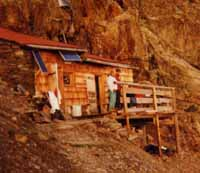

circuit de Plan Glacier (2680 m)

Départ : chalets de Miage (1559 m)
Aller : 3,9 km, +1111 m, 188 min
Retour : 6,1 km, + 50 et - 1161 m, 129 min
Difficulté : EE+
Période : août - septembre
Remarque : à parcourir par temps sec ; nombreux passages câblés et aériens.
Bibliographie : Pierre Millon (sentiers du Vertige Hte Savoie n° 9).
Itinéraire décrit page 142 du guide AsF©.
On peut aussi partir de Bionnassay par l’itinéraire AsF© 16.2 (page 119), suivre au col de Tricot le trajet dans le sens inverse, et, à Miage, revenir par le Champel (tour du Vorassay).